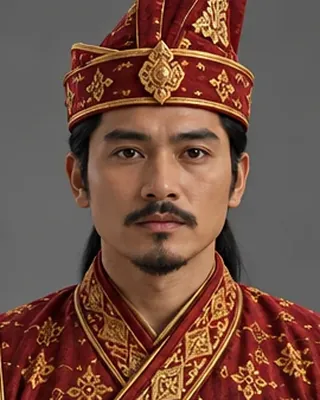

14th century · Ahom prince

Son of Sukhaangphaa and Bhajani. The project catalogue shows him meeting Kamata envoys and being made governor of Sadiya.
Record confidence: low.
Open interactive profile
c. 1310
c. 1335
c. 1338
c. 1339